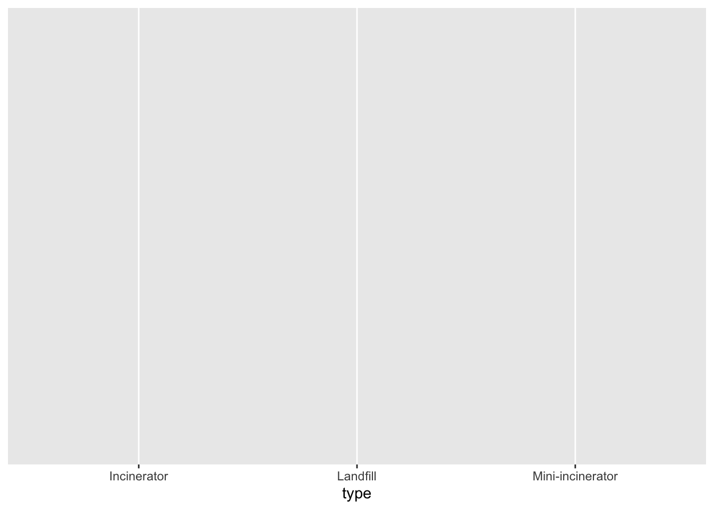
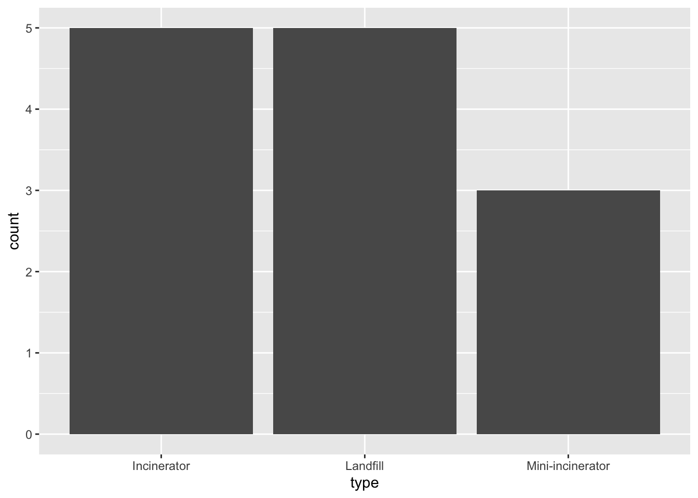
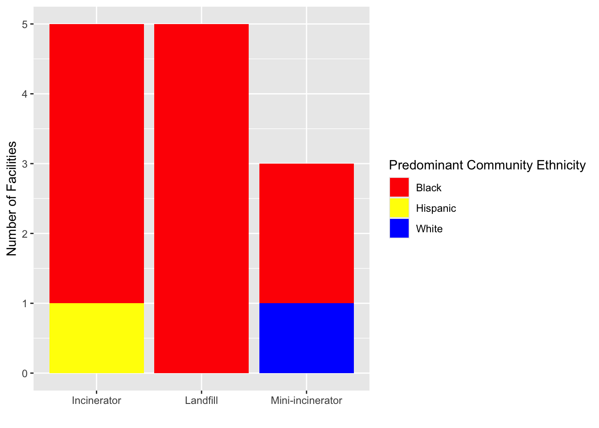

install.packages("tidyverse") # for tidying data
install.packages("gt")
install.packages("gtsummary") # creating tables[Assess] Solid Waste Landfill Siting
📍Houston, TX
Class Overview
- Centering activity
- Setting the stage
- Paired coding
- Group Debrief
Centering Activity
Setting the Stage
My Approach to Teaching Data Science for Environmental Justice
- Assumes no background in data science
- Focuses on the use of data for communicating environmental injustices and working toward more just solutions
- Intended to connect to theoretical lessons
General Data Science Process
- Import Data
- Tidy it
- Understand
- Transforming Data
- Visualize
- Model
- Communicate
Footnote: approach is from R for Data Science Book
Course Organization
- Bigger Picture Case Study (HW 02– Ungraded)
- Skills that build on one another (HW 03-08)
- Data Tidying
- Data Transforming
- Data Visualization
- Exploring Exposure
- Intro to Spatial Data
- Apply it! Use weeks 11 - 14 to show me your theoretical and methodological skills
Homework Approach
- Assignments will be started in class on Fridays in pairs and submitted the following Thursday individually.
- I’ll lecture a bit throughout the class to introduce new skills or topics, then let pairs work through sections of the assignment.
- I’ll choose pairs randomly using my fancy name generator.
Group Coding
Learning Outcomes
- Understand what R can do
- Recreate tables 1-3 in Bullard’s Study
- Visualize Distributional Justice
- Connect it to theoretical understandings of distributional justice
Let’s Get Started
- Find your pair
- Download Homework 02 folder and open it in Posit Cloud.
Understanding What R Can Do
Importing Data
- This assignment is comprised of one dataset:
- Robert Bullard’s original data
- Note on how I got this data
Understanding the IDE
- What you see in Posit [insert screenshot]
Installing packages
- Packages are comprised of functions, data, and additional documentation to load, clean, and analyze your data.
- Installing a package needs only one line of code:
- Following an install, you need to load your packages:
library(tidyverse)
library(gt)
library(gtsummary)Loading Data
- Now we load our data. In Posit Cloud, navigate to xx and select xx [include IDE screenshot].
- Load our first dataset, which includes the 13 landfill and incinerator sites in Bullard’s first case study.
sites <- read_csv("data/bullard_1979_waste_sites.csv")Understanding data
- the
sitesdata that we’ve loaded is adataframe, meaning it is a rectangular collection of variables (or columns) and observations (rows). In each cell, is avalue. - This dataset is
tabular, meaning that the data is organized into a table with rows and columns.tidydata has five rules:- Every
variablehas its own column. - Every
observationis stored in its own row. - Each
valueis stored in the cell of a corresponding variable. - Values don’t contain units (this should be in a codebook).
- No extraneous information (footnotes, extra titles, etc.)
- Every
Sites Data
sites# A tibble: 13 × 5
facility neighborhood type predom_eth_1979 location
<chr> <chr> <chr> <chr> <chr>
1 Fourth Ward FOURTH WARD Inci… Black Southwe…
2 Patterson Street WEST END/COTTAGE GRO… Inci… Black Northwe…
3 Kelly Street KASHMERE GARDENS Inci… Black Northea…
4 Holmes Road SUNNYSIDE Inci… Black Southea…
5 Velasco SECOND WARD Inci… Hispanic Southea…
6 Westpark LARCHMONT Mini… White Sothwest
7 Kelly Street KASHMERE GARDENS Mini… Black Northea…
8 Northwest Service Center CARVERDALE Mini… Black Northwe…
9 Fourth Ward FOURTH WARD Land… Black Southwe…
10 Sunnyside SUNNYSIDE Land… Black Southea…
11 Reed Road SUNNYSIDE Land… Black Southea…
12 Kirkpatrick TRINITY GARDENS Land… Black Northea…
13 West Donnovan ACRES HOMES Land… Black Northwe…Recreating Tables 1 through 3
Selecting variables
Table One: City of Houston Garbage Incinerators
table_one <- sites |>
filter(type == "Incinerator") |>
select(facility, neighborhood, predom_eth_1979, location)Formatting Tables
table_one |>
gt() |>
cols_label(
facility = "Site of Incinerator",
neighborhood = "Neighborhood",
predom_eth_1979 = "Ethnicity",
location = "Location"
) |>
tab_header(
title = ("Table 1"),
subtitle = "City of Houston Garbage Incinerators"
) |>
tab_source_note("The above Houston-owned garbage incinerators were in operation between the 1920s' and 1975")| Table 1 | |||
|---|---|---|---|
| City of Houston Garbage Incinerators | |||
| Site of Incinerator | Neighborhood | Ethnicity | Location |
| Fourth Ward | FOURTH WARD | Black | Southwest |
| Patterson Street | WEST END/COTTAGE GROVE | Black | Northwest |
| Kelly Street | KASHMERE GARDENS | Black | Northeast |
| Holmes Road | SUNNYSIDE | Black | Southeast |
| Velasco | SECOND WARD | Hispanic | Southeast |
| The above Houston-owned garbage incinerators were in operation between the 1920s' and 1975 | |||
Exercise One: Rinse, Wash, Repeat for Tables 2 and 3
- Recreate tables 2 and 3 using the same approaches
- Pay close attention to the information shared in each table
Visualizing Distributional Injustice
- First, let’s recreate table 4
- Summarizes the type of landfill disposal site by % of black and non-black communities.
- Thoughts on process getting from
sitesdataframe to table 4?
Prepping Data
- Bullard summarizes by both facility type and ethnicity (black versus non-black).
- can use an
if_elsefunction nested in amutatefunction.mutatefunction can add or modify a variableif_elsecreates a test and defines what to do with variables that meet (or do not) meet the test.
- can use an
Creating Summary Table
- To summarize by two groups, Bullard creates a
crosstabstable - Can be done using the
gtsummarypackage
sites |>
mutate(predom_eth_1979 = if_else(predom_eth_1979 == "Black", "Black", "Nonblack")) |>
tbl_cross(
row = type,
col = predom_eth_1979,
percent = "row"
)
predom_eth_1979
|
Total | ||
|---|---|---|---|
| Black | Nonblack | ||
| type | |||
| Incinerator | 4 (80%) | 1 (20%) | 5 (100%) |
| Landfill | 5 (100%) | 0 (0%) | 5 (100%) |
| Mini-incinerator | 2 (67%) | 1 (33%) | 3 (100%) |
| Total | 11 (85%) | 2 (15%) | 13 (100%) |
Formatting Table
sites |>
mutate(predom_eth_1979 = if_else(predom_eth_1979 == "Black", "Black", "Nonblack")) |>
tbl_cross(
row = type,
col = predom_eth_1979,
percent = "row",
label = list(type ~ "Waste Disposal Sites", predom_eth_1979 ~ "Ethnicity")
) |>
bold_labels()
Ethnicity
|
Total | ||
|---|---|---|---|
| Black | Nonblack | ||
| Waste Disposal Sites | |||
| Incinerator | 4 (80%) | 1 (20%) | 5 (100%) |
| Landfill | 5 (100%) | 0 (0%) | 5 (100%) |
| Mini-incinerator | 2 (67%) | 1 (33%) | 3 (100%) |
| Total | 11 (85%) | 2 (15%) | 13 (100%) |
Exercise 2: One more summary table
- Suppose you lived in a Southwest neighborhood and were interested in the distribution of facility types by Southwest versus non-southwest neighborhoods.
- Create a cross tabs summary table (make sure it’s formatted nicely!)
Plot the data
Using ggplot2
ggplot2is a lovely package for visualizing data.- It works works using a layer approach.
- The first layer tells ggplot2 to create a graph base using the
sitesdataframe.
ggplot(data = sites)
Adding Variables
- Let’s visualize ethnicity by facility type, similar to our approach in table 4, except as a bar chart.
mappingtells ggplot how variables in the data will be mapped to visual aspects (aesthetics) of the plot.aesis the function that defines what variables will be mapped to the x and y axes.xis the only variable in this case, but we will define it as type.
ggplot(data = sites, mapping = aes(x = type))
Adding a Visual
geomspecifies how the plot will represent the data.- in ggplot2, this can be functions like
geom_bar,geom_point, orgeom_boxplot.
- in ggplot2, this can be functions like
ggplot(data = sites, mapping = aes(x = type)) +
geom_bar()
Formatting colors and labels
- adding
fillto the ggplot specifies that we want the chart colors to reflect the frequencies of each ethnicity across each disposal site type. scale_fill_manual()allows you to change the fill colors in your data.valuescan be color names, hex codes, or RGB values.nameis the legend name
labs()allows you to rename your axes
Exercise 3: Reading a Vignette
- Often, we get a bit mixed up when we’re first starting.
- One helpful way to troubleshoot, can be typing “?” followed by the function into your environment (i.e.,
?scale_fill_manual()) - Read the vignette for the
scale_fill_manual()package. What package does it recommend for color blindness?
Connecting to Theory
Having recreated Bullard’s landfill case study in R, answer the following questions using the readings: